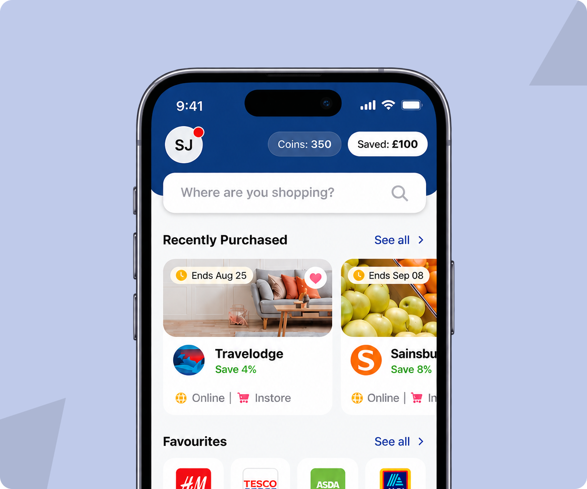

Designing a scalable rewards ecosystem across 10 brands.
The rewards app is a multi-brand membership rewards platform built for the UK market, bringing discounts, gift cards, referrals, prize draws and member benefits into one experience.

One product foundation. Ten distinct brands.
The rewards app is a multi-brand membership rewards platform built for the UK market, bringing discounts, gift cards, referrals, prize draws and member benefits into one experience.
The challenge wasn't simply to redesign a rewards app.
It was to create one product foundation flexible enough to support 10 distinct brands, while keeping the experience coherent, scalable and operationally efficient.
I led the product design direction from pre-sales and product strategy through mobile, responsive web, design system and CMS thinking.
Product scale
A scalability problem across three dimensions.
The initial brief looked like a product redesign. Through discovery, I reframed it as a scalability problem across three dimensions:
01 — Member discovery
Members often arrive knowing what brand they want, rather than understanding the platform's reward categories.
02 — Brand identity
Each brand needed to feel distinctive and native—not like the same application with a different logo and colour.
03 — Product scalability
Launching or changing a brand shouldn't require designing and engineering another version of the product.
Product design direction from strategy to system.
I owned the product design direction across:
- Product strategy and experience definition
- Pre-sales concept and prototype
- Research synthesis and mental-model exploration
- Information architecture
- Mobile experience
- Responsive web experience
- Design system and token architecture
- Multi-brand theming strategy
- CMS/content workflow thinking
- Design reviews and engineering collaboration
The project involved designers, engineers, product stakeholders and client teams.
Turning a requirement list into a product proposition.
The engagement started during pre-sales.
Instead of treating the requirement document as a list of screens, I translated it into a product proposition and created a clickable concept that demonstrated how the experience could evolve.
The prototype gave stakeholders something tangible to evaluate—not just visual design, but the product structure, core journeys and future scalability.
This helped convert the initial opportunity into a product design engagement.
Members don't think in platform categories. They think in brands, rewards and actions.
The client already had research and documented pain points, so I focused on validating, connecting and extending existing knowledge rather than restarting research from zero.
I brought together:
- Stakeholder conversations
- Existing customer research
- Experience and competitor review
- Analytics and journey review
- Mental-model exploration
Platform → Category → Reward → Action
Brand → Reward → Action
Strategic shift
Instead of making members learn the rewards ecosystem first, the experience starts with what they already know:
Brand search, recently purchased brands and favourites became more prominent, while categories remained an exploration layer.
Meet the member's existing intent first. Introduce the ecosystem second.
Separate experience architecture from brand expression.
We didn't want to build 10 different applications. We designed one shared product foundation with controlled variation.
Navigation
Core journeys
Interaction patterns
Components
Product states
Business rules
Colour
Typography
Imagery
Content
Promotional emphasis
Selected feature variations
Why this mattered
It created a balance between two competing needs:
That was the core scalability problem—and the design system became part of the product strategy, not simply a UI library.
Organise the experience around what members come to do.
Rather than organising the mobile experience around features, I organised it around what members come to do.
Home / Shop
Brand-led discovery with recently purchased and favourite brands surfaced early.
Rewards
The value proposition comes before the action—for example, showing savings and redemption context upfront.
Wallet
Coins, savings and available benefits are brought into one place.
Gift Cards
A focused Browse → Choose → Confirm → Purchase journey, with Buy & Win mechanics layered into the purchase experience.
Referral
A focused Invite → Share → Track journey.
This made the product easier to understand while giving every major member behaviour a clear home.
Make member value visible throughout the experience.
One small but strategic decision was bringing Coins and Saved £ into the persistent mobile header.
The intention wasn't visual decoration.
It created a continuous reminder of the value members were accumulating through the product.
This also gave us a measurable hypothesis to validate through returning-member behaviour and reward redemption.
Two surfaces of one product—not two products.
Mobile became the first expression of the product model. Once the core experience and design system were established, the engagement expanded into responsive web.
The objective wasn't to create a desktop version of the app.
The product logic, IA, core journeys, design language, components and tokens remained shared, while the web experience adapted for:
- Responsive layouts
- Higher information density
- Desktop interaction patterns
- Different content contexts
The web experience inherited the product strategy instead of starting from scratch.
A scalable consumer experience also needs scalable operations.
I contributed to the thinking around the CMS and content workflow, enabling teams to manage:
- Rewards
- Brand content
- Promotions
- Visual assets
- Product information
This shifted part of the product from being design-dependent to configuration-driven.
Optimising for scale, speed and maintainability.
These decisions optimised for scale, speed and maintainability, not just visual consistency.
The strongest outcomes were structural as well as product-facing.
Product scale
10 brands supported by one shared product foundation.
Platform scale
Mobile + responsive web designed from one experience architecture.
Business expansion
The initial mobile engagement expanded into responsive web.
Delivery
Mobile moved into production, with web progressing toward launch.
Efficiency
The design system and theming approach created the foundation to measure:
- Time required to launch a new brand
- Component reuse across brands
- Design effort per brand
- Content changes completed without design involvement
Member outcomes
North Star
Monthly members who redeem at least one reward
Activation
Time from app open → first reward viewed
Engagement
Reward discovery → redemption rate
Commercial
Gift-card purchase conversion
Retention
30-day active members / repeat redeemers
Growth
Referral invites → successful referrals
The north-star metric connects member value—saving money through rewards—with business value generated through reward usage.
The hardest part wasn't designing 10 branded experiences.
It was deciding what should never change—and what should be allowed to change.
The breakthrough was separating:
Once that boundary was established, the design system became a strategic mechanism for scaling the business rather than simply a collection of reusable components.